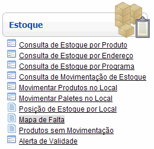
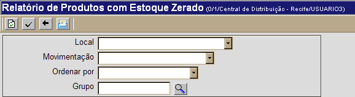
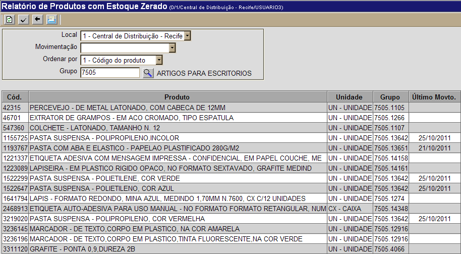
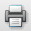
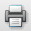

Mapa de Falta [ Voltar ]Utilize esta tela para gerar um relatório de produtos com estoque zerado. O formulário "Mapa de Falta" encontra-se dentro do menu "Estoque". 
O sistema exibirá a seguinte tela: 
Para gerar uma lista contendo os produtos com estoque zerado, siga os passos abaixo: 1º Passo: configure os filtros desejados para esta consulta. Se este campo for deixado em branco, o relatório incluirá todos os locais da rede.
2º
Passo: clique no botão 
3º Passo: clique no botão  para ter acesso
à tela do relatório "Produtos com Estoque Zerado". Se desejar imprimir o relatório, clique no botão  [Imprimir] do navegador. para ter acesso
à tela do relatório "Produtos com Estoque Zerado". Se desejar imprimir o relatório, clique no botão  [Imprimir] do navegador. |
 [Procurar] para selecioná-lo a partir de uma listagem contendo todos os grupos cadastrados.
[Procurar] para selecioná-lo a partir de uma listagem contendo todos os grupos cadastrados.